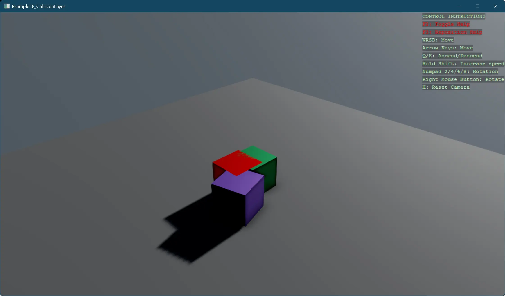

Collision Layer
This example demonstrates how to implement and control collision detection between different types of entities using Stride's collision layer system. The code showcases:
- Creation and configuration of separate collision layers for players, enemies, and the ground
- Setting up a collision matrix to define interaction rules between different layers
- Implementation of selective collision detection where players can collide with each other and the ground, but not with enemies
The example creates a scene with two player cubes (green and purple) that can interact with each other and the ground, plus a red enemy cube that passes through players while still colliding with the ground. This pattern is useful for implementing gameplay mechanics like ghost modes, team-based collision, or phasing through specific obstacles.
Note
This example requires the additional NuGet packages Stride.CommunityToolkit.Skyboxes and Stride.CommunityToolkit.Bepu. Make sure to install both before running the code.

View on GitHub.
using Stride.BepuPhysics;
using Stride.BepuPhysics.Definitions;
using Stride.CommunityToolkit.Bepu;
using Stride.CommunityToolkit.Engine;
using Stride.CommunityToolkit.Rendering.ProceduralModels;
using Stride.CommunityToolkit.Skyboxes;
using Stride.Core.Mathematics;
using Stride.Engine;
// This example demonstrates CollisionLayer feature, two players colliding with each other and not colliding with the enemy entity (red cube)
// Define collision layers to control which objects can collide with each other
// Objects within the same layer can collide with each other
var playerLayer = CollisionLayer.Layer1;
var enemyLayer = CollisionLayer.Layer2;
var groundLayer = CollisionLayer.Layer3;
// CollisionMatrix is used to define which objects can collide with each other
var collisionMatrix = new CollisionMatrix();
collisionMatrix.Set(playerLayer, playerLayer, shouldCollide: true);
collisionMatrix.Set(playerLayer, enemyLayer, shouldCollide: false);
collisionMatrix.Set(playerLayer, groundLayer, shouldCollide: true);
collisionMatrix.Set(enemyLayer, groundLayer, shouldCollide: true);
using var game = new Game();
game.Run(start: Start);
// Sets up the initial scene with players and enemies
void Start(Scene scene)
{
game.SetupBase3DScene();
game.AddSkybox();
SetupCollisionMatrix(scene);
SetupGroundCollisionLayer(scene);
// Create player entities
CreateEntityWithLayer("Player1", Color.MediumSeaGreen, new Vector3(0, 0.5f, 0), scene, playerLayer);
CreateEntityWithLayer("Player2", Color.MediumPurple, new Vector3(0.5f, 4, 0.7f), scene, playerLayer);
// Create enemy entity
CreateEntityWithLayer("Enemy", Color.Red, new Vector3(-0.1f, 12, 0.5f), scene, enemyLayer);
}
void SetupCollisionMatrix(Scene scene)
{
var camera = scene.GetCamera();
var simulation = camera?.Entity.GetSimulation();
if (simulation == null) return;
simulation.CollisionMatrix = collisionMatrix;
}
void SetupGroundCollisionLayer(Scene scene)
{
var groundEntity = scene.Entities.FirstOrDefault(e => e.Name == "Ground");
if (groundEntity == null) return;
var groundBody = groundEntity.GetComponent<StaticComponent>();
groundBody!.CollisionLayer = groundLayer;
}
void CreateEntityWithLayer(string name, Color color, Vector3 position, Scene scene, CollisionLayer layer)
{
var enemy = CreateEntity(name, color, position);
var body = enemy.GetComponent<BodyComponent>();
body!.CollisionLayer = layer;
enemy.Scene = scene;
}
Entity CreateEntity(string name, Color color, Vector3 position)
{
var entity = game.Create3DPrimitive(PrimitiveModelType.Cube, new()
{
EntityName = name,
Material = game.CreateMaterial(color),
});
entity.Transform.Position = position;
return entity;
}